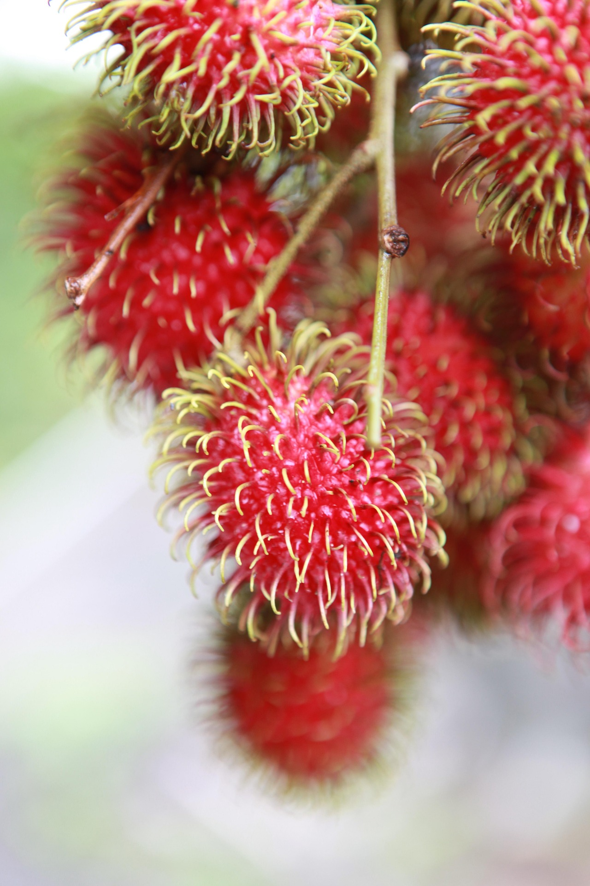

Rambutan is a tropical fruit tree famous for its hairy red fruits and sweet juicy flesh. It is widely grown in Southeast Asia and thrives in warm and humid climates. Rambutan fruits are commonly eaten fresh and are popular in home gardens, orchards, and tropical farming projects.
Needs full sunlight daily for healthy tree growth and fruit production.
Requires regular watering to keep soil moist, especially during hot weather.
Best growth at 22°C – 35°C in tropical and humid environments.
Use fertile, deep, well-draining soil rich in organic matter.
Fruits are harvested when they turn bright red or yellow depending on the variety.
Consumed fresh, used in desserts, canned fruits, juices, and tropical dishes.
Cause: Nutrient deficiency or poor soil condition.
Solution: Add compost and balanced fertilizer regularly.
Cause: Poor drainage and excessive watering.
Solution: Improve drainage and avoid waterlogging.
Cause: Water stress or lack of nutrients.
Solution: Maintain consistent watering and fertilizing.
Cause: Common tropical fruit pests.
Solution: Monitor fruits regularly and keep area clean.
Cause: Poor soil nutrients or insufficient sunlight.
Solution: Improve soil fertility and provide full sunlight.